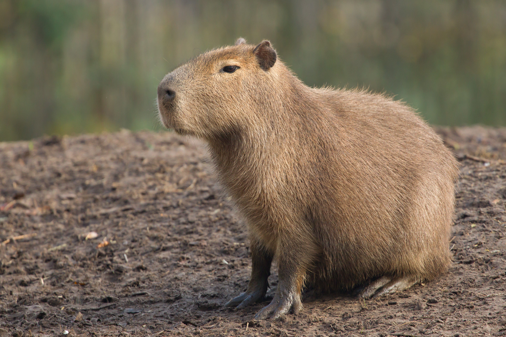

Capivaras são os maiores roedores do mundo, nativas da América do Sul. Podem pesar entre 35 e 65 kg e viver em grupos de até 20 indivíduos, sempre próximas a rios, lagos ou áreas alagadas — são ótimas nadadoras e passam boa parte do tempo na água para se refrescar e escapar de predadores.
São herbívoras (comem gramíneas, plantas aquáticas e frutas), têm hábito social forte e são conhecidas por sua convivência pacífica com outras espécies, como aves, jacarés e até capivaras domesticadas convivendo com gatos e cachorros. No Brasil, são encontradas em quase todo o território, principalmente perto de corpos d'água.